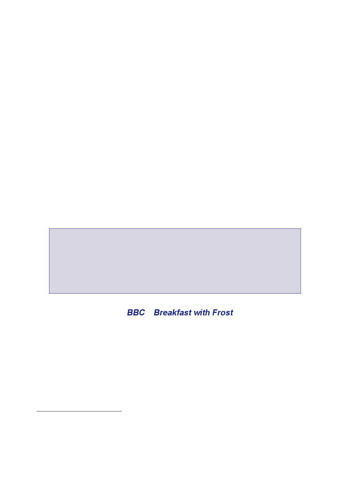

The Report
of the Iraq Inquiry
182.
As agreed on
19 December, Dr Blix and Dr ElBaradei gave an informal update
of
their
assessment of the Iraqi declaration and the progress of inspection
activities to the
members of
the Security Council on 9 January (see Section
3.6).76
The points
made by
Dr Blix
included:
•
His
“overall impression” remained that Iraq’s declaration was “rich in
volume
but poor in
new information” and “practically devoid of new evidence
on
such issues”.
•
“… [T]o
create confidence that it has no more weapons of mass
destruction
or
proscribed activities relating to such weapons, Iraq must
present
credible evidence”.
•
He had “not
asserted … that proscribed items or activities” existed; but if
they
did “Iraq
should present them in our presence”. There was “still time” for
that.
There was
“no way the inspectors” could “close a file by simply invoking
the
precept
that Iraq cannot prove the negative”.
•
There was a
series of inconsistencies between the declaration and earlier
Iraqi
declarations
which had been described as full, final and complete, in addition
to
the issues
he had highlighted on 19 December, including in relation to
special
munitions,
imports of missile engines and solid missile fuel and
VX.
•
On 30
December, UNMOVIC inspectors found some Volga missile
engines.77
•
On 16 January,
UNMOVIC discovered rocket warheads at an ammunition
store.78
•
On the same
day UNMOVIC also discovered nuclear-related documents hidden at
the
home of an
Iraqi scientist.
183.
Mr Blair
decided to use an interview on Breakfast
with Frost on 26
January
to set out
the position that the inspections should be given sufficient time
to
determine
whether or not Saddam Hussein was co-operating fully. If he
was
not, that
would be a sufficient reason for military action. A find of WMD
was
not required.
184.
In a meeting
with Sir Jeremy Greenstock and No.10 officials to discuss
the
handling of
Iraq in the UN Security Council in the coming weeks on 23 January,
Mr Blair
set out an
approach which included the need, “if we could possibly get it”,
for “hard
76
UNMOVIC,
Briefing
the Security Council, 9 January 2003: Inspections in Iraq and a
further assessment
of Iraq’s
weapons declaration.
77
UN Security
Council, ‘4707th Meeting Friday 14 February 2003’
(S/PV.4707).
78
Note DIS
Counter Proliferation Support Group, 12 February 2003, ‘The
Effectiveness of UN Weapons
Inspections
in Iraq’.
324